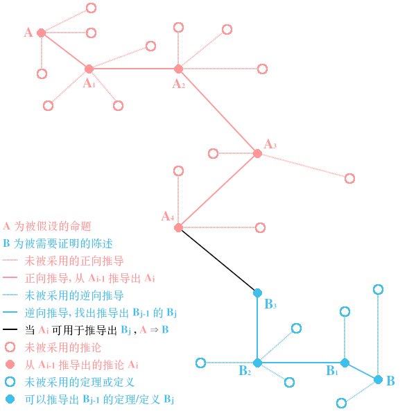

How to Read and Do Proofs 6th Edition 阅读笔记
Table of Contents
xxx
1. Chapter 1: The Truth of It All
真值表
| A | B | A implies B / \(\mathbf{A} \implies \mathbf{B}\) |
|---|---|---|
| True | True | True |
| True | False | False |
| False | True | True |
| False | False | True |
证明一个命题(proposition)的本质是:
假定 \(\mathbf{A}\) 是 True, 尝试以 \(\mathbf{A} \implies \mathbf{B}\) 为 True 为目的推断出 \(\mathbf{B}\) 为 True, 来得出 \(\mathbf{A} \implies \mathbf{B}\),
而 \(\mathbf{B}\) 的真值需要以 \(\mathbf{A}\) 作为依据, 并非简单的 \(\mathbf{A}\) 为 True 和 \(\mathbf{B}\) 为 True 就可以了.
其实原文是 "you can assume that A is true; your job is to conclude that B is true",
并没有 "尝试以 \(\mathbf{A} \implies \mathbf{B}\) 为
True为目的" 这一句或类似表达, 这里只是把上下文的信息结合在里面了.从而强调证明的目的是得出 \(\mathbf{A} \implies \mathbf{B}\) 的真值, 推断出 \(\mathbf{B}\) 为
True只是实现目的的手段.这么一来衍生出了一个疑问:
为什么不假设 \(\mathbf{A}\) 为
False和推断 \(\mathbf{B}\) 为True来得出 \(\mathbf{A} \implies \mathbf{B}\) 为True的方式来进行证明呢?因为根据真值表, 当 \(\mathbf{A}\) 为
False时, 不管 \(\mathbf{B}\) 是True还是False, \(\mathbf{A} \implies \mathbf{B}\) 都为True, 这样的话证明就变得没必要了;而当 \(\mathbf{A}\) 为
True时, 在以证明 \(\mathbf{A} \implies \mathbf{B}\) 为True的前提下, \(\mathbf{B}\) 只能为True.
在逻辑中, 如果想要 \(B\) 成立, 只要 \(A\) 成立即可, 那么 \(A\) 就是 \(B\) 的充分条件, 但不排除其它情况可使得 \(B\) 成立;
如果想要 \(B\) 成立, 要求 \(A\) 以及一些额外条件同时成立, 那么 \(A\) 就是 \(B\) 的必要条件,
或者说只有 \(A\) 成立时, \(B\) 才有可能成立, 如果 \(A\) 不成立, 那么 \(B\) 一定不成立;
如果 \(A\) 成立那 \(B\) 必定成立, 且不存在其它情况使 \(B\) 成立时 那么 \(A\) 就是 \(B\) 的充分必要条件.
英文表述 "if \(A\) then \(B\)" 或 "\(B\) if \(A\)" 表示 \(A\) 是 \(B\) 的充分条件: \(A \implies B\);
"\(B\) only if \(A\)" 表示 \(A\) 是 \(B\) 的必要条件: \(B \implies A\);
"if and only if \(A\) then \(B\)" 或 "\(B\) if and only if \(A\)" 表示 \(A\) 是 \(B\) 的充分必要条件.
2. Chapter 3: 关于定义与数学术语 (On Definitions and Mathematical Terminology)
把该章节提前是为了方便笔记.
2.1. 定义 (Definition)
在数学中, 定义是各方对特定术语含义达成一致约定.
比如 Chapter 1 中, \(\mathbf{A} \implies \mathbf{B}\) 就是一个定义, 真值表也是一个定义.
人们可以选择不认同某个定义, 但就无法对该定义背后的含义进行讨论.
另外, 定义没有真假/对错可言, 但有好坏之分, 有是否合理之分.
2.2. 陈述 (Statement)
陈述是可以被证明真假的语句.
2.3. 命题 (Proposition)
已经被证明为真的陈述, 或者说尝试证明的, 值得关注的真陈述.
2.4. 定理 (Theorem)
被认为是十分重要的命题, 通常这种命题的适用范围更大, 可以用在其它数学证明上.
可以认为定理是对命题进行一般化.
2.5. 引理 (Lemma)
用于证明定理的辅助性命题, 比如要证明 \(A \implies B\),
需要证明 \(A \implies A_1\) 为 True, 再证明 \(A_1 \implies A_2\) 为 True, 最后证明 \(A_2 \implies B\) 为 True,
其中 \(A \implies A_1\) 和 \(A_1 \implies A_2\) 就是引理.
2.6. 推论 (Corollary)
从命题或定理 \(A\) 推理得到的命题 \(B\).
2.7. 公理 (Axiom)
无正式定义, 无需正式证明的陈述, 但被公众认为是命题.
3. Chapter 2: 双向推导证明法 (The Forward-Backward Method)
双向推导证明法是最基本的证明方法, 同时也是所有其它证明方法的基础. 它也被称为直接证明法.
想要证明 \(\mathbf{A} \implies \mathbf{B}\), 双向推导证明法如下:
假设 \(\mathbf{A}\) 为命题, 并利用 \(\mathbf{A}\) 的信息推断出命题 \(\mathbf{A}_1\), 进而推断出命题 \(\mathbf{A}_2\), 如此类推,
最终从命题 \(\mathbf{A}_i\) 推断出陈述 \(\mathbf{B}\), 此时 \(\mathbf{B}\) 为 True, 该过程称为正前推导过程(forward processing).
提问使用什么定理来证明 \(\mathbf{B}\), 得到答案定理 \(\mathbf{B}_1\), 并再次提问使用什么定理来证明定理 \(\mathbf{B}_1\), 得到答案定理 \(\mathbf{B}_2\),
如此类推, 直到得到定理 \(\mathbf{B}_j\), 该过程称为逆向推导过程(backward processing).
如果命题 \(\mathbf{A}_i\) 可用于证明定理 \(\mathbf{B}_j\), \(\mathbf{A}_i\) 就是定理, 那么 \(\mathbf{A} \implies \mathbf{B}\).
通常流程是先进行逆向推导过程, 再进行正向推导过程.

Figure 1: 双向推导证明法就像在 \(\mathbf{A}\) 和 \(\mathbf{B}\) 之间找出其中一条通路 (通路不止一条)
未被采用的逆向推导是因为没能从 \(\mathbf{A}\) 推导 或 想出 可用于证明它们的有用信息.
反过来, 那么未被采用的正向推导是因为没能 \(\mathbf{B}\) 导出 或 想出 需要被证明的定理.
这个方法不仅可用在证明上, 也可以解决问题上: 先分析问题, 看有什么工具可以解决问题,
由于工具有适用场景, 因此需要根据实际情况来选择工具.
也说明了一点, 提高知识储备可以提高解决问题的能力.
4. Chapter 12: 归纳法 (Induction)
归纳法适用于证明陈述集合 \(\left\{ P(n) \mid n \gt 0, n \in \mathbb{Z} \right\}\) 的所有命题都为 True.
它的核心是假设 \(P(n)\) 为 True 并尝试以 \(P(n)\) 推断出 \(P(n+1)\) 为 True, 从而证明 \(P(n) \implies P(n+1)\) 为 True.
这样就能像多米诺骨牌一样, 只要证明其中一个命题为 True, 就可以得出它的下一个命题也为 True,
为了保证覆盖到所有命题, 需要证明第一个命题 \(P(1)\) 为 True.
学习过编程的人应该听说过递归(
recursion)这个概念, 它其实就是源于归纳法.递归会把问题划分成多个规模更小的问题, 使得问题更容易解决,
这个划分过程并非一步到位的, 一次划分得到的问题还可能需要继续划分, 一直划分直到问题能够解决的程度.
把需要划分的情况称为可递归情况, 把无需划分的情况称为基本情况.
回到归纳法上, \(P(1)\) 就是基本情况, \(n \gt 1\) 时 \(P(n)\) 属于可递归情况,
\(P(n) \implies P(n+1)\) 在说明如何对 \(P(n)\) 进行"扩大规模"得到 \(P(n+1)\);
递归则是反过来, 知道如何把小变大, 那么就知道如何把大拆小, 直到拆到 \(P(1)\) 为止;
这两者本质上是一样的.
一旦遇到命题取决于规模 \(n\) 时, 应该条件反射想到归纳法.